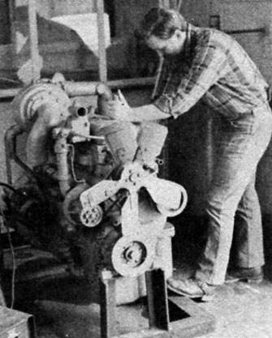

The events of this past summer have provided just about everyone with abundant proof that the days of inexpensive and readily available fossil fuels are gone for good.
However, North America is - like it or not - a continent that runs on wheels ... and our dependence upon transportation (and therefore upon the internal combustion engine) requires that we come up with alternative liquid fuels.
As most MOTHER readers know by now, alcohol is one possible answer to the gasoline crisis. There are other alternatives, too, some of which might not make economic sense - at least in terms of fulltime use - yet, but that could come in handy in an emergency ... or even become economically practical as fossil fuel prices continue to rise. One such ''unlikely" fuel - which is capable of powering any diesel-engined tractor, truck or auto - is vegetable oil!
Now, the notion of running an engine on "essence of soybean" isn't near as crazy as it might sound. You see, when Rudolf Diesel designed his first engine around 1890, he planned on fueling the powerplant with coal dust ... a material that was abundant in Germany at that time. It was years later that the engines were first run on petroleum products.
Then, in the twentieth century, the Chinese were hit by terribly inflated petroleum prices ... and they solved the problem, in part, by running their diesel engines on vegetable oil.
It seems that prior to World War II diesel fuel cost about twice as much as did vegetable oil in China, and the petroleum product's price doubled and trebled following the war. So, under those circumstances, the vegetable-based fuel made good economic sense. (For all I know, the folks in China may still be running their tractors on tung oil.)
Of course, I didn't travel to China to find out about the fuel potential of vegetable oil! In fact, I came across the idea while I was researching alcohol fuel in the Berea College (Kentucky) library.
In the course of my studies I read a set of books titled The Internal Combustion Engine, which had been published by the Massachusetts Institute of Technology. Hidden in the second volume - appearing only as a footnote - was a mention of a master's thesis that had reported on the use of soybean oil as a diesel fuel.
So, being a curious guy, I got on the phone to MIT and asked the folks there to send me a copy of the thesis, fully expecting that it would describe some sort of complicated and expensive mechanical conversion that would have to be finished before the diesel could run on vegetable oil fuel.
However, the thesis didn't recommend any such thing. In fact, it stated that the authors had just poured the oil in and fired 'er up. "Well," I said to myself, "nothing's that simple ... there must be a catch."
So I picked up a gallon of diesel fuel and a gallon of soybean oil and took them to the college's shop. Dr. Donald Hudson - who taught the course in Advanced Power Mechanics - was as curious about my experiment as I was ... and he test-started the shop's 600-horsepower Cummins turbocharged J-model diesel. The engine, of course, ran perfectly on diesel fuel.
Then, knowing that the Cummins was in working order, I disconnected the fuel lines, drained the tank, and - once everything was reconnected - poured in the gallon of vegetable oil.
The engine came to life with a roar ... and the smell of a hundred burning skillets filled the shop. It worked!
That successful experiment caused me to read further into the MIT thesis. The authors of that paper found that soybean oil actually produced more power - per pound - than did diesel fuel itself! This seems to mean that the vegetable product would deliver more miles per gallon than would the petroleum derivative.
The most obvious disadvantage of using vegetable oil as fuel is cost. Diesel fuel is still relatively inexpensive in this country ... at least in comparison with soybean oil and so forth. However, if your diesel Volkswagen is running on fumes and you're 50 miles from the nearest truck stop, it sure makes sense to pull up to a grocery store - should one happen to be nearby - and throw a gallon of vegetable oil in the fuel tank instead of resorting to a tow truck.
And who knows ... as new techniques for extracting plant oils are developed (especially if those discoveries are accompanied by petroleum prices substantially higher than today's), "soybean power" may just come into its own!
|
 PHOTO: MICHAEL BROWN The author, Michael Brown, gets ready to fire up a diesel engine after pouring in a gallon of vegetable oil fuel. |
|
|